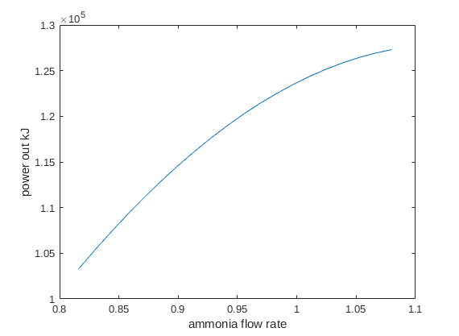

addpath('findValue')
addpath('runComponent')
addpath('Data')
ER_min = 0.765;
ER_max = 1.0125;
ammonia_min = 4/3*4*0.2*ER_min;
ammonia_max = 4/3*4*0.2*ER_max;
ammonia = linspace(ammonia_min,ammonia_max,20);
power_out = zeros(1,20);
for i = 1:20
power_out(i) = findPower(ammonia(i));
end
plot(ammonia,power_out);
xlabel('ammonia flow rate');
ylabel('power out kJ');
Compressor successful Calculated and tabulated enthalpy margin is -5.361650e+03 kJ Compressor work done -6.488723e+04 kJ
Warning, ER is out of interpolation rangesBurner successful T4 temperature 1.882773e+03 K Equivalence ratio 0.8
Turbine successful Calculated and tabulated enthalpy margin is -9.788956e+03 kJ Turbine work done 1.681679e+05
Heat exchanger converges Temperature difference at burner inlet 388 KCompressor successful Calculated and tabulated enthalpy margin is -5.361650e+03 kJ Compressor work done -6.488723e+04 kJ
Burner successful T4 temperature 1.897957e+03 K Equivalence ratio 0.8
Turbine successful Calculated and tabulated enthalpy margin is -9.847601e+03 kJ Turbine work done 1.702651e+05
Heat exchanger converges Temperature difference at burner inlet 395 KCompressor successful Calculated and tabulated enthalpy margin is -5.361650e+03 kJ Compressor work done -6.488723e+04 kJ
Burner successful T4 temperature 1.912191e+03 K Equivalence ratio 0.8
Turbine successful Calculated and tabulated enthalpy margin is -9.903617e+03 kJ Turbine work done 1.722754e+05
Heat exchanger converges Temperature difference at burner inlet 401 KCompressor successful Calculated and tabulated enthalpy margin is -5.361650e+03 kJ Compressor work done -6.488723e+04 kJ
Burner successful T4 temperature 1.925477e+03 K Equivalence ratio 0.8
Turbine successful Calculated and tabulated enthalpy margin is -9.957194e+03 kJ Turbine work done 1.741980e+05
Heat exchanger converges Temperature difference at burner inlet 407 KCompressor successful Calculated and tabulated enthalpy margin is -5.361650e+03 kJ Compressor work done -6.488723e+04 kJ
Burner successful T4 temperature 1.937814e+03 K Equivalence ratio 0.8
Turbine successful Calculated and tabulated enthalpy margin is -1.000848e+04 kJ Turbine work done 1.760319e+05
Heat exchanger converges Temperature difference at burner inlet 413 KCompressor successful Calculated and tabulated enthalpy margin is -5.361650e+03 kJ Compressor work done -6.488723e+04 kJ
Burner successful T4 temperature 1.949202e+03 K Equivalence ratio 0.8
Turbine successful Calculated and tabulated enthalpy margin is -1.005757e+04 kJ Turbine work done 1.777761e+05
Heat exchanger converges Temperature difference at burner inlet 418 KCompressor successful Calculated and tabulated enthalpy margin is -5.361650e+03 kJ Compressor work done -6.488723e+04 kJ
Burner successful T4 temperature 1.959641e+03 K Equivalence ratio 0.8
Turbine successful Calculated and tabulated enthalpy margin is -1.010456e+04 kJ Turbine work done 1.794296e+05
Heat exchanger converges Temperature difference at burner inlet 422 KCompressor successful Calculated and tabulated enthalpy margin is -5.361650e+03 kJ Compressor work done -6.488723e+04 kJ
Burner successful T4 temperature 1.969131e+03 K Equivalence ratio 0.9
Turbine successful Calculated and tabulated enthalpy margin is -1.014947e+04 kJ Turbine work done 1.809915e+05
Heat exchanger converges Temperature difference at burner inlet 426 KCompressor successful Calculated and tabulated enthalpy margin is -5.361650e+03 kJ Compressor work done -6.488723e+04 kJ
Burner successful T4 temperature 1.977673e+03 K Equivalence ratio 0.9
Turbine successful Calculated and tabulated enthalpy margin is -1.019234e+04 kJ Turbine work done 1.824607e+05
Heat exchanger converges Temperature difference at burner inlet 430 KCompressor successful Calculated and tabulated enthalpy margin is -5.361650e+03 kJ Compressor work done -6.488723e+04 kJ
Burner successful T4 temperature 1.985265e+03 K Equivalence ratio 0.9
Turbine successful Calculated and tabulated enthalpy margin is -1.023315e+04 kJ Turbine work done 1.838362e+05
Heat exchanger converges Temperature difference at burner inlet 434 KCompressor successful Calculated and tabulated enthalpy margin is -5.361650e+03 kJ Compressor work done -6.488723e+04 kJ
Burner successful T4 temperature 1.991908e+03 K Equivalence ratio 0.9
Turbine successful Calculated and tabulated enthalpy margin is -1.027190e+04 kJ Turbine work done 1.851170e+05
Heat exchanger converges Temperature difference at burner inlet 437 KCompressor successful Calculated and tabulated enthalpy margin is -5.361650e+03 kJ Compressor work done -6.488723e+04 kJ
Burner successful T4 temperature 1.997602e+03 K Equivalence ratio 0.9
Turbine successful Calculated and tabulated enthalpy margin is -1.030855e+04 kJ Turbine work done 1.863021e+05
Heat exchanger converges Temperature difference at burner inlet 439 KCompressor successful Calculated and tabulated enthalpy margin is -5.361650e+03 kJ Compressor work done -6.488723e+04 kJ
Burner successful T4 temperature 2.002348e+03 K Equivalence ratio 0.9
Turbine successful Calculated and tabulated enthalpy margin is -1.031860e+04 kJ Turbine work done 1.873662e+05
Heat exchanger converges Temperature difference at burner inlet 441 KCompressor successful Calculated and tabulated enthalpy margin is -5.361650e+03 kJ Compressor work done -6.488723e+04 kJ
Burner successful T4 temperature 2.006144e+03 K Equivalence ratio 0.9
Turbine successful Calculated and tabulated enthalpy margin is -1.034884e+04 kJ Turbine work done 1.883547e+05
Heat exchanger converges Temperature difference at burner inlet 443 KCompressor successful Calculated and tabulated enthalpy margin is -5.361650e+03 kJ Compressor work done -6.488723e+04 kJ
Burner successful T4 temperature 2.008991e+03 K Equivalence ratio 0.9
Turbine successful Calculated and tabulated enthalpy margin is -1.037730e+04 kJ Turbine work done 1.892448e+05
Heat exchanger converges Temperature difference at burner inlet 444 KCompressor successful Calculated and tabulated enthalpy margin is -5.361650e+03 kJ Compressor work done -6.488723e+04 kJ
Burner successful T4 temperature 2.010890e+03 K Equivalence ratio 1.0
Turbine successful Calculated and tabulated enthalpy margin is -1.040398e+04 kJ Turbine work done 1.900358e+05
Heat exchanger converges Temperature difference at burner inlet 445 KCompressor successful Calculated and tabulated enthalpy margin is -5.361650e+03 kJ Compressor work done -6.488723e+04 kJ
Burner successful T4 temperature 2.011839e+03 K Equivalence ratio 1.0
Turbine successful Calculated and tabulated enthalpy margin is -1.042887e+04 kJ Turbine work done 1.907267e+05
Heat exchanger converges Temperature difference at burner inlet 445 KCompressor successful Calculated and tabulated enthalpy margin is -5.361650e+03 kJ Compressor work done -6.488723e+04 kJ
Burner successful T4 temperature 2.011840e+03 K Equivalence ratio 1.0
Turbine successful Calculated and tabulated enthalpy margin is -1.045197e+04 kJ Turbine work done 1.913165e+05
Heat exchanger converges Temperature difference at burner inlet 445 KCompressor successful Calculated and tabulated enthalpy margin is -5.361650e+03 kJ Compressor work done -6.488723e+04 kJ
Burner successful T4 temperature 2.010892e+03 K Equivalence ratio 1.0
Turbine successful Calculated and tabulated enthalpy margin is -1.047323e+04 kJ Turbine work done 1.918043e+05
Heat exchanger converges Temperature difference at burner inlet 445 KCompressor successful Calculated and tabulated enthalpy margin is -5.361650e+03 kJ Compressor work done -6.488723e+04 kJ
Burner successful T4 temperature 2.008994e+03 K Equivalence ratio 1.0
Turbine successful Calculated and tabulated enthalpy margin is -1.049261e+04 kJ Turbine work done 1.921893e+05
Heat exchanger converges Temperature difference at burner inlet 444 K
